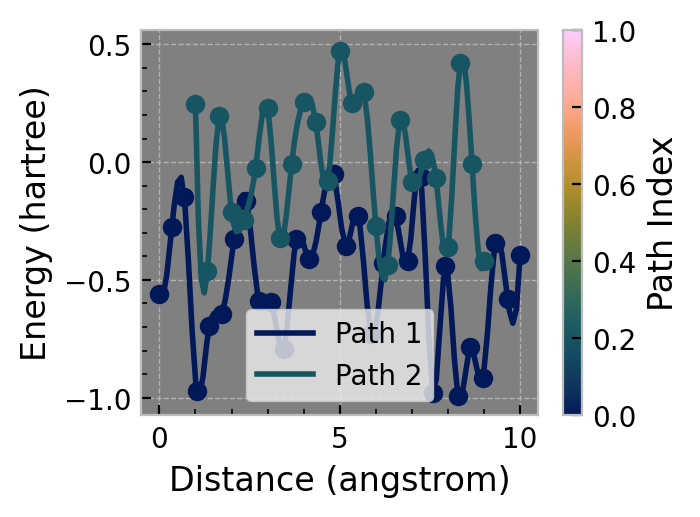
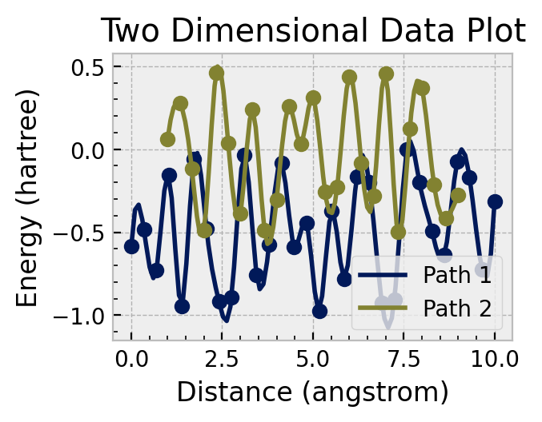
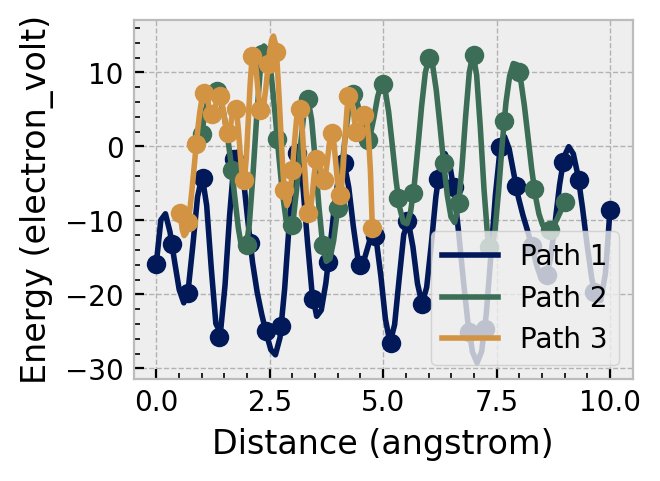

from chemparseplot.plot.structs import EnergyPath, BasePlotter, TwoDimPlot, XYData
from chemparseplot.plot.geomscan import plot_energy_paths
from chemparseplot.units import ureg
import numpy as np
import matplotlib.pyplot as plt
Overview¶
We plan to facilitate two kinds of plots:
One-shot paths on multiple files / data sources
Interactive plots
The reason why is simple, often one wishes to plot a couple of paths and add or remove paths which aren’t very useful.
One-shot multi-plot¶
path1 = EnergyPath('Path 1', np.linspace(0, 10, 30) * ureg.angstrom, np.random.uniform(-1, 0, 30) * ureg.hartree)
path2 = EnergyPath('Path 2', np.linspace(1, 9, 25) * ureg.angstrom, np.random.uniform(-0.5, 0.5, 25) * ureg.hartree)
plot_energy_paths([path1, path2], {'distance': 'angstrom', 'energy': 'hartree'}, colormap_fraction=0.4);

Interactive plots¶
twodim_plot = TwoDimPlot()
twodim_plot.set_labels('Distance', 'Energy')
twodim_plot.set_units('angstrom', 'hartree')
# Add XYData
data1 = XYData('Path 1', np.linspace(0, 10, 30) * ureg.angstrom, np.random.uniform(-1, 0, 30) * ureg.hartree)
data2 = XYData('Path 2', np.linspace(1, 9, 25) * ureg.angstrom, np.random.uniform(-0.5, 0.5, 25) * ureg.hartree)
data3 = XYData('Path 3', np.linspace(1, 9, 25) * ureg.bohr, np.random.uniform(-0.5, 0.5, 25) * ureg.hartree)
twodim_plot.add_data(data1)
twodim_plot.add_data(data2)
twodim_plot.add_title("Two Dimensional Data Plot")

twodim_plot.set_units('angstrom', 'electron_volt')
twodim_plot.fig

twodim_plot.add_data(data3)
twodim_plot.fig

max(data3.x.to("angstrom"))
4.762594898135798 angstrom